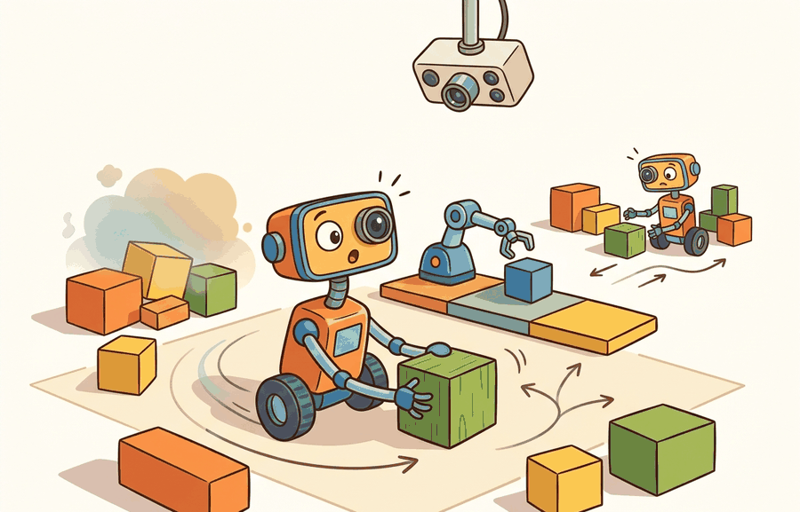

Section 10.1: Gym is dead; Gymnasium is the standard
"Gym is dead; Gymnasium is the standard matters when the next action changes the evidence you thought you had."

Figure 10.1A: Section 10.1: Gym is dead; Gymnasium is the standard is easier to reason about when the figure shows the concept, evidence path, and action consequence in one physical situation.
A Careful Control Loop
Big Picture
Gym is dead; Gymnasium is the standard defines the contract an embodied experiment exposes to learning code: observations, actions, rewards, termination, truncation, rendering, and diagnostic info. Gymnasium handles the single-agent version of that contract, while PettingZoo extends the same discipline to multi-agent interaction.
This section turns the agent-environment interface into Gymnasium API compatibility, reset and step signatures, termination versus truncation, and wrapper behavior practice, preparing RL training, multi-agent experiments, and benchmark evaluation with one auditable environment contract.
Reader Pathway
Use this section to make gym is dead; gymnasium is the standard operational: identify the quantity or representation being carried, the interface that carries it through the embodied stack, and the failure evidence that would force a redesign.
What This Section Builds
The migration from legacy Gym to Gymnasium is operational, not cosmetic. The important change is the environment contract that every later RL script, simulator wrapper, benchmark, and debugging trace will assume.
The goal is a reproducible habit: call reset(seed=...), unpack step into five values, treat terminated and truncated as different signals, and save enough info to explain what happened.
The Interface Is The Test
This environment is ready when another reader can reset it with the same seed, inspect Gymnasium API compatibility, reset and step signatures, termination versus truncation, and wrapper behavior, reproduce the same rollout, and recover the same logged evidence.
Theory
Gymnasium keeps the familiar environment idea from Gym but modernizes the contract. A single-agent environment resets to (observation, info). Each step returns (observation, reward, terminated, truncated, info). The extra flag matters because a task can end because the robot achieved or failed the objective, or because an external limit stopped the episode before the task itself reached a terminal state.
For learning code, that distinction controls bootstrapping and evaluation. A policy update may treat a true terminal state differently from a time limit. For embodied systems, it also controls incident analysis: falling over, reaching the goal, running out of time, and hitting a safety boundary should not collapse into one vague done bit.
Mechanism
The migration rule is simple: old Gym examples that say obs = env.reset() and obs, reward, done, info = env.step(action) need to be rewritten before they become teaching material. Gymnasium exposes the reason an episode ended in the return signature, so the environment contract carries information that legacy loops often hid in info or lost entirely.
Worked Example
Code Fragment 10.1.1 below uses the current Gymnasium API on a small control task. The same unpacking pattern carries over to robot simulators, where info should hold diagnostic fields such as contact state, time limit source, or safety margin.
# Inspect the modern Gymnasium reset and step contract.
# The five step fields separate task endings from time-limit endings.
import gymnasium as gym
env = gym.make("CartPole-v1")
observation, info = env.reset(seed=7)
env.action_space.seed(7)
action = env.action_space.sample()
next_observation, reward, terminated, truncated, info = env.step(action)
print(type(observation).__name__, observation.shape, info)
print(action, float(reward), terminated, truncated)
env.close()
ndarray (4,) {}
1 1.0 False False
The expected output is a four-value observation vector, an empty initial info dictionary, and one sampled step with reward 1.0 while both ending flags remain false. Read that combination as evidence that the Gymnasium loop is returning the modern five-field contract and that this particular first step did not end the episode for either task or time-limit reasons.
Code Fragment 10.1.1 runs one Gymnasium step in CartPole-v1 and shows the exact return contract. The important observation is not the pole physics, it is the separation between terminated and truncated, which a legacy done loop would hide.
Library Shortcut
The production shortcut is to start new examples with Gymnasium, not legacy Gym, and to reject copied snippets that still unpack done. That single habit prevents a long chain of downstream mistakes in RL bootstrapping, benchmark accounting, and debugging reports.
Practical Recipe
Use import gymnasium as gym in new code and update legacy examples during migration.
Call env.reset(seed=seed) before the first step and unpack both the observation and info.
Unpack env.step(action) into five fields every time.
Reset when terminated or truncated is true, but log which flag caused the reset.
Store env.spec.id, wrapper stack, seed, render mode, and library versions with the result artifact.
Gymnasium And PettingZoo Practice
A usable environment wrapper for this section records Gymnasium API compatibility, reset and step signatures, termination versus truncation, and wrapper behavior, plus observation and action spaces, reset seed, info dictionary fields, and reproducible evidence artifacts.
Common Failure Mode
The migration trap is replacing done with terminated or truncated everywhere and then forgetting that the two reasons mean different things. That shortcut may run, but it can bias value estimates and hide whether the robot failed the task or merely reached an evaluation limit.
Practical Example
A robotics team porting an old grasping benchmark should keep the old score table only after rerunning the environment with the Gymnasium step contract. The new artifact should report successes, physical failures, time-limit truncations, and safety stops as separate counts.
Memory Hook
For gym is dead; gymnasium is the standard, the useful test is simple: could a teammate point to the log line, plot, or trace that proves the idea changed the agent's next action?
Research Frontier
Environment APIs are becoming research infrastructure, not only convenience wrappers. Gymnasium's maintained API and the Farama ecosystem make it easier to compare robot-learning results across labs, but reproducibility still depends on versioned environments, declared wrappers, deterministic seed handling, and saved termination semantics.
Self Check
Can you point to the line in your environment loop that distinguishes task termination from time-limit truncation? If not, the loop is still carrying a legacy Gym assumption.
Builder's Deep Dive
Gymnasium is the standard because current RL libraries, environment suites, and Farama documentation converge on its contract. The migration is not cosmetic: it changes how an experiment represents episode endings, reset information, render modes, environment metadata, and wrapper behavior.
The builder's discipline is to treat an environment loop as a typed interface. If an embodied policy is evaluated through the wrong unpacking pattern, the algorithm may still train, but the result artifact cannot answer the basic scientific question: what caused each episode to stop?
Practical Tool Choices For This Section
Tool or Library
Role in the Topic
Builder Advice
Gymnasium
Single-agent reset and step contract
Use it for new environments and for legacy Gym migrations.
PettingZoo
Multi-agent extension of the environment idea
Use it when agents act sequentially or simultaneously and each agent needs its own spaces and rewards.
Stable-Baselines3
Training loop consumer
Use it to see how standard RL code expects spaces, wrappers, vector environments, and callbacks.
MuJoCo or Isaac Lab
Physics-backed task source
Wrap these only after the Gymnasium contract is explicit.
ROS 2
Robot-system bridge
Log the Gymnasium episode fields alongside robot middleware traces.
Implementation Recipe
A robust migration starts with one old loop and one new loop evaluated on the same environment seed. The comparison is valid only if both loops record the same episode boundary fields and the Gymnasium version preserves the distinction between terminated and truncated.
Find every call site that unpacks done.
Rewrite the loop to unpack terminated and truncated.
Add a one-episode smoke test that asserts the output tuple has five fields.
Save counts for termination and truncation separately.
Only then reconnect the loop to a trainer or evaluation dashboard.
# Verify that a migrated Gymnasium loop is deterministic under a seed.
# Same seed should reproduce the first sampled action and first transition.
import gymnasium as gym
def first_step(seed):
env = gym.make("CartPole-v1")
observation, info = env.reset(seed=seed)
env.action_space.seed(seed)
action = env.action_space.sample()
next_observation, reward, terminated, truncated, info = env.step(action)
env.close()
return round(float(next_observation[0]), 5), int(action), terminated, truncated
print(first_step(21))
print(first_step(21))
print(first_step(22))
The expected output repeats the first tuple exactly for the repeated seed and changes both the sampled action and next observation when the seed changes. That is the minimal sign that environment reset seeding and action-space seeding are both wired correctly.
Code Fragment 10.1.2 uses the same Gymnasium seed twice, then changes the seed once. Matching first-step traces show that the environment and action space were seeded together, which is the minimum smoke test before larger comparisons.
Teaching Move
Ask readers to run the seed smoke test before copying any older Gym tutorial loop. The exercise makes the five-field Gymnasium step contract visible before trainer code hides it.
Failure Analysis Pattern
When an experiment about gym is dead; gymnasium is the standard fails, avoid labeling the whole method as weak. First assign the failure to perception, state estimation, planning, control, timing, data coverage, or evaluation. Then rerun one controlled perturbation that isolates the suspected cause. This pattern turns a disappointing rollout into a reusable diagnostic asset.
Key Takeaway
Gymnasium is the standard because its reset and step contract preserves the information a learning algorithm and a debugging report need. Treat old done examples as migration tasks, not copy-paste templates.
Exercise 10.1.1
Take one legacy Gym loop from an older tutorial and rewrite it for Gymnasium. The finished version should unpack five step fields, call reset after either ending flag, and report separate counts for task termination and time-limit truncation.
What's Next?
The next section should inherit the Gym is dead; Gymnasium is the standard interface contract and change only the next environment-design variable under study.
The official Gymnasium docs define the reset, step, render, terminated, truncated, and info conventions used by maintained environments. Readers implementing custom environments should use this as the API reference. Readers should connect this source to gym is dead; gymnasium is the standard when deciding what is reusable, what is benchmark-specific, and what must be remeasured.
PettingZoo defines maintained APIs for multi-agent reinforcement learning. It is directly relevant when a section moves from one embodied agent to turn-based, simultaneous, or mixed multi-agent interaction. Readers should connect this source to gym is dead; gymnasium is the standard when deciding what is reusable, what is benchmark-specific, and what must be remeasured.
This paper explains why multi-agent environments need explicit agent ordering and interface discipline. It gives researchers the context behind the AEC and parallel API choices described in this chapter. Readers should connect this source to gym is dead; gymnasium is the standard when deciding what is reusable, what is benchmark-specific, and what must be remeasured.
The original Gym paper explains the environment abstraction that Gymnasium modernizes. It is useful for readers comparing legacy examples with the maintained Farama stack. Readers should connect this source to gym is dead; gymnasium is the standard when deciding what is reusable, what is benchmark-specific, and what must be remeasured.
Stable-Baselines3 gives a practical reference for how environment spaces, vectorized environments, wrappers, and evaluation callbacks are consumed by training code. Engineers should read it when turning a custom environment into a reproducible RL experiment. Readers should connect this source to gym is dead; gymnasium is the standard when deciding what is reusable, what is benchmark-specific, and what must be remeasured.